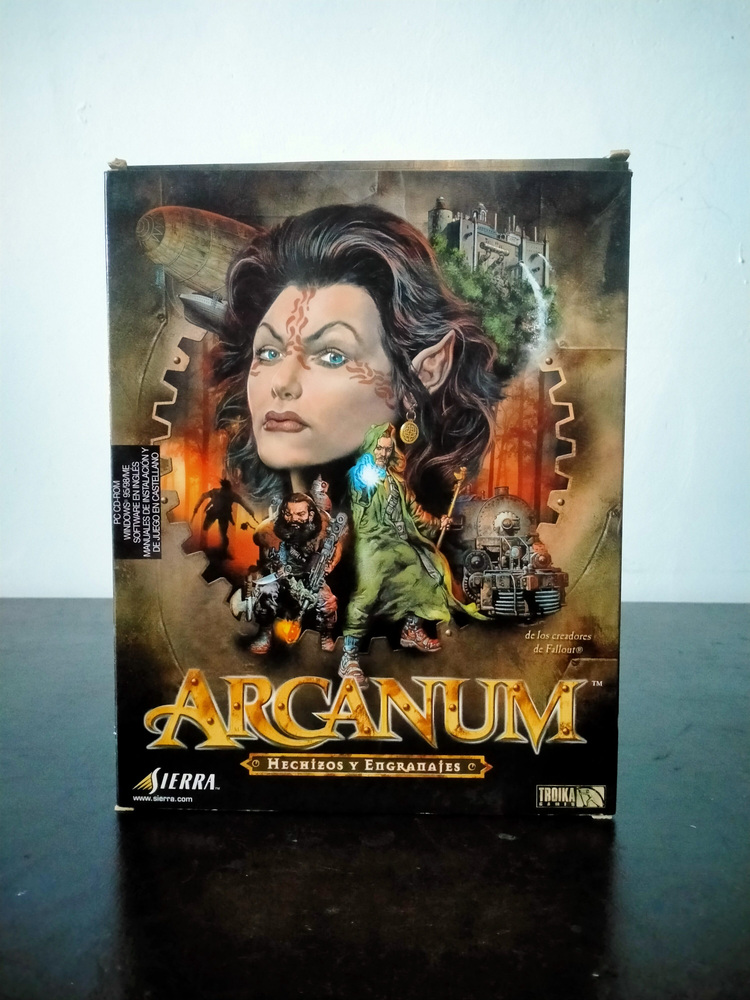

Ficha #000008
Arcanum: Hechizos y Engranajes
Edición española en caja grande de Arcanum: Of Steamworks and Magick Obscura, publicado en España como Arcanum: Hechizos y Engranajes. Desarrollado por Troika Games, estudio fundado por antiguos miembros de Interplay vinculados a Fallout, combina rol occidental isométrico, libertad de creación de personaje y un universo de fantasía industrial donde la magia y la tecnología funcionan como fuerzas opuestas. Su sistema permite orientar la partida hacia disciplinas mágicas, especialización tecnológica, combate, diplomacia o sigilo, con una estructura abierta y una fuerte carga narrativa. Es una pieza relevante dentro del CRPG de comienzos de los años 2000 por su ambientación steampunk, su diseño de misiones con múltiples resoluciones y su condición de obra de culto dentro del catálogo de Sierra.
- Formato
- Big Box
- Plataforma
- Win95 Win98 WinMe Win2000
- Género
- Rol CRPG Fantasía Steampunk Isométrico
- Serie
- Todos Big Box
- Desarrollador
- Troika Games
- Distribuidor
- Sierra
- EAN
- —
Contenido de la edición
- Caja Big Box
- Estuche Jewel Case
- 2 CD-ROM
- Manual
- Folleto o documentación adicional
Preservación
- Protección
- No determinado
- Formato recomendado
- BIN/CUE
- Jugable en virtualización
- Sí
Preservar mediante imagen completa de los CD-ROM originales y verificar posteriormente si la edición española aplica comprobación de disco durante instalación o ejecución.